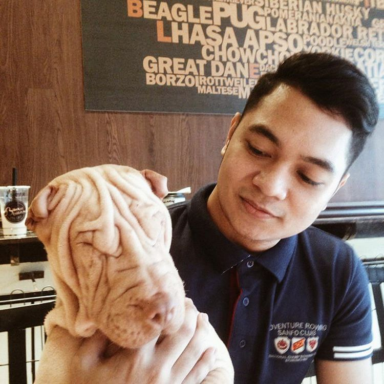

We are a group of young individuals who love and care for the welfare of the animals. We believe that animals are also as important as humans and we should treat them right. Our primary objective is to make people see that animals should be cared for and not to take them for granted, as the saying goes "Do unto others as you would have them do unto you"
Our Mission
To give awareness using our skills learned in pursuing Bachelor of Science in Information Technology, promote and protect the rights of every animals as every lives of animals is valuable. To help and keep rescuing animals, While doing so we may lose our mind from doing these actions, but surely we will find our soul. Some people don't understand why we help animals in need but in our side, we dont understand why they wonder.
Our Vision
We dream of humanity who is passionate enough to have awareness, love and care that will enable them to realize that animals have feelings. They can think and feel just like us humans. As students of a catholic school institution, we the BSIT students continously improve to save animals and prevent violence to them.
Our Core Values
Christian Spirited - Having God as the center of our faith and letting him use us for the animals. God's will Creativity - Using our skills and in what we've acquired in the BSIT as a student of Saint Louis University. Competence - Changing every obstacle that come in our way as a challenge for us to improve and deliver for the animal welfare. Social Involvement - Being socialy active to express what we're implying for the animals.
The 8 Principles that we believe by:
Animals should be taken care of, like human beings take care of each other.
Wild animals should be left alone nor should they be disturbed
Animals should be loved and they should not be killed nor be eaten.
Domestic animals should have a proper home to live in.
People should treat animals with respect.
Be responsible in taking care of animals.
Always help an animal in need.
Animals should not be abused.
Gallery

Because we care
Because We Care Animal Cruelty is the intentional torture and neglegence of man towards animals. Intentional acts of torture by man towards animals involves beating, spitting, inhumane butchering, and other unpleasant acts. On the other hand, the irresponsibility of man towards animals like leaving them out in the streets being harassed by other people or letting them starve to death leads to the negligence of man towards animals. Nevertheless, doing any kind of harm leads them to be in a state of trauma, pain, disability, and - in the worst case - death. We at Animal Talks do not condone any violent acts towards animals. As an organization dedicated in caring animals, we have the obligation to treat and protect animals from any kind of harassment. If you know anybody who is involved in violent acts towards animals, don't hesitate to contact your local law enforcement to handle such matters. Remember, "Do unto others what you want people do to you".
We dream of humanity who is passionate enough to have awareness, love and care that will enable them to realize that animals have feelings. They can think and feel just like us humans
As students of a catholic school institution, we the BSIT students continously improve to save animals and prevent violence to them.
To give awareness, promote and protect the rights of every animals where:
Pets will be treated as pets
Killings for entertainment such movies will be prevented
love and care for animals.
About Us
Galo Berlyn Garlejo
UX designer
Danzel Taccayan
Content Specialist
Patricia Mae Radie
Editor
Angelo Austin Araos
Developer
Miguel Delos Santos
Page Builder
Join Us!
Bring out the Animal Rescuer within you! By joining us, we could add your stories in our gallery page to inspire more people to have them join us and to be aware that animal cruelty must stop!. You could be one of us to visit places and to discover animal species. You could join our rescue team and help animals in real time! But we first, we need you to contact us by clicking on the About us.